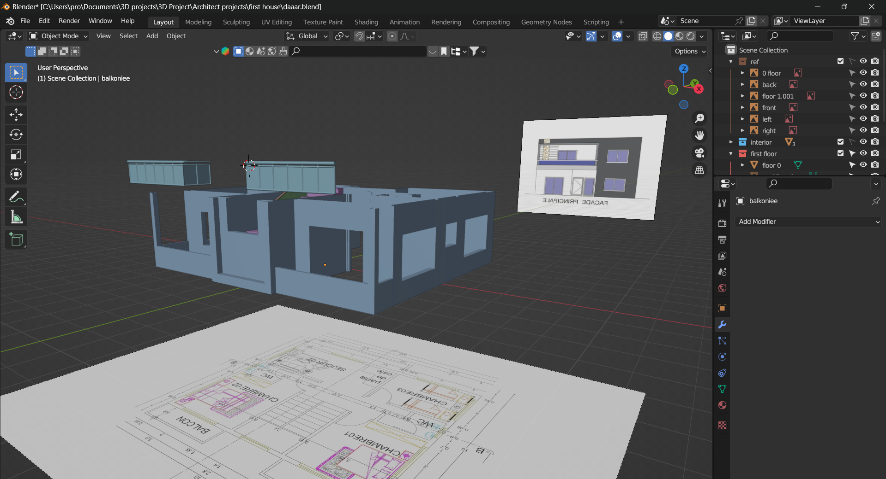

How Much does 3D Rendering Cost?
For starters, keep in mind that the exact price will first of all depend on the type of project and delivery time. The two basic types include a still image. A still image looks like a photo of what a certain object or area can look like. To be honest, it’s impossible to give an exact answer to this question without knowing anything about your project as there is a range of aspects to take into account. For starters, the size of the project is what really matters. Next, the rendering pricing heavily depends upon the architectural specification of the interior and exterior design as well as the time required for the final product to be completed.
Still, to give you an approximate idea, the average price range for a high-quality 3D architectural still image can be between $400 and $3000.
What Influences Rendering Prices?
First of all, architectural project cost depends upon the scope of work needed to be done to complete the project. Most typically, 3D renderings require three professionals: a project manager, a 3D artist, and a post processing artist, 3D artist’s labour cost taking the largest share of the total cost. Fair enough, as 3D artist’s responsibilities include the following: Understanding the plans and the client’s vision. Producing the model with the help of 3D software. Texturing the model. Setting up the lighting. Setting up the camera. What can push up the 3D artist’s labour cost? The major factors include the level of detail and the number of unique elements required.
How Much Does 3DModeling Design Cost & What Are Prices for Freelance Design Service Firms?
| Project Type | Hourly/ m2 | Per Project |
|---|---|---|
| Product Design 3D Modeling | $40-$60 | |
| Architectural Design 3D Modeling | $8-$12 per m2 | $200 per room and up |
| 3D Rendering | $90-$200 | $300-$500+ for small projects. Up to $2,500 and more for large projects |